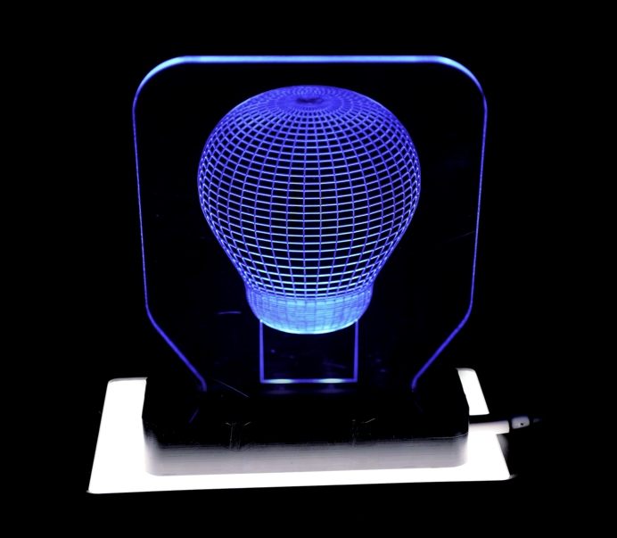
The LED light in this example consists of four parts: the circuit, the base, the display light board, and the touch switch, which shows the comprehensive capabilities of the Carvera Air.
With Carvera Air, you can significantly accelerate the process from design to prototype, and even to commercial products.
Tutorial Video
Circuit
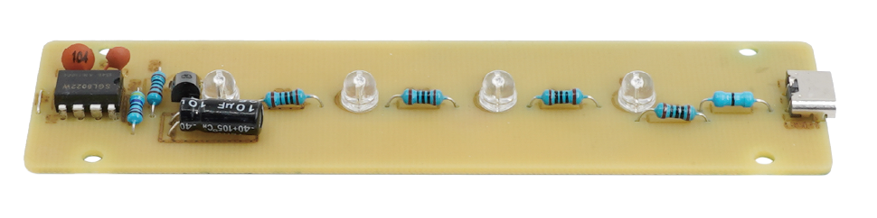
Material preparation
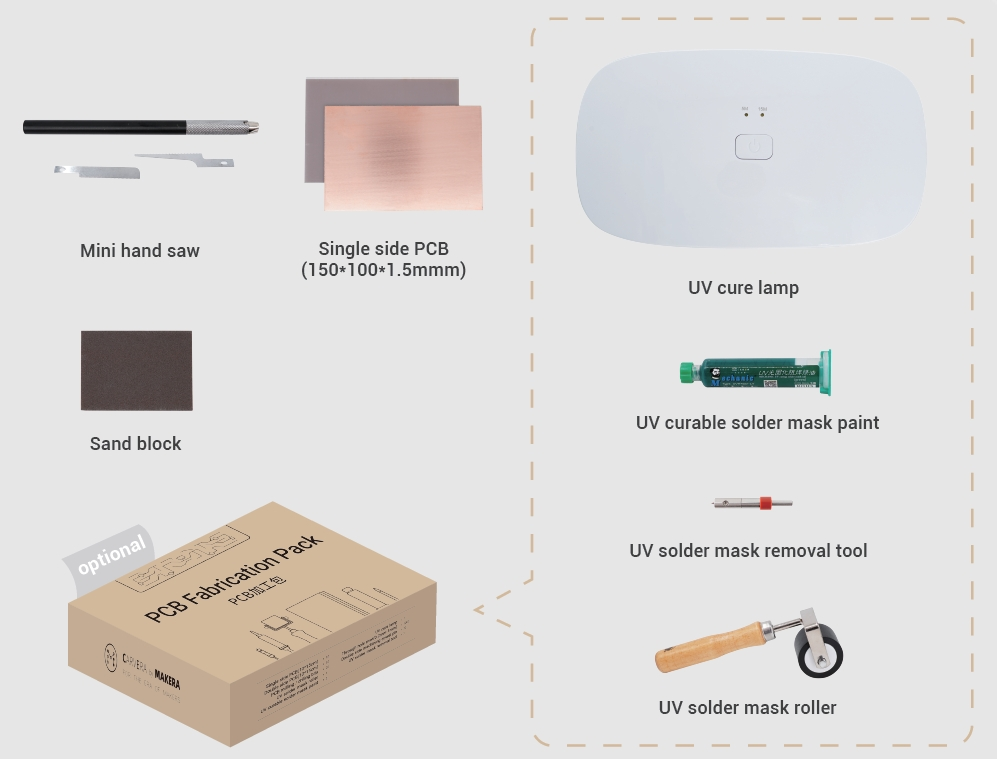
Machining process
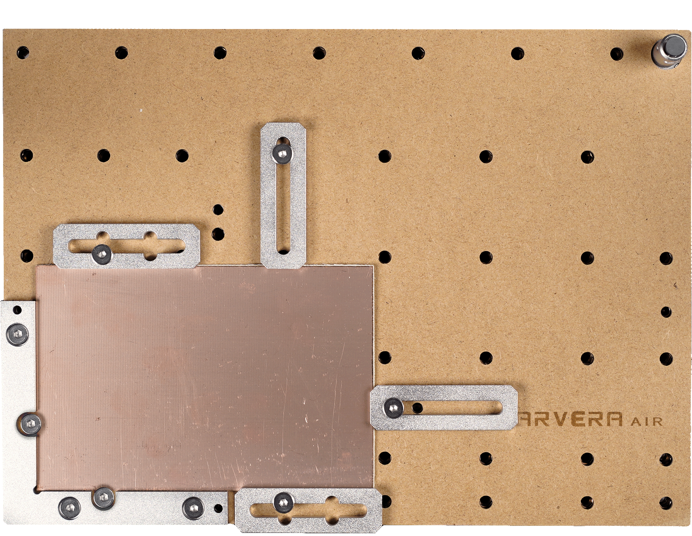
1. Fix the PCB and the wasteboard to the table, as shown in the figure. Place it close to the L-bracket at anchor point 1.
Note：Use the edge of the top clamps to fix the PCB and leaves sufficient space for dust collection and milling.
Note：The PCB board may deform after being stored for a long time. It is recommended to flatten the PCB before machining to increase accuracy.Better use some double-sided tape between the wasteboard and the bed / PCB for further consistency.
2. Make sure the used milling bits are ready: No.2-30°0.2mm V-bit，No.3-0.8mm corn bit， No.5-UV solder mask removal bit (Optional, when making a UV-soldermasked PCB only.)
3. Turn on the power and wait for the automatic homing to complete.
4. Open the control software and connect to Carvera Air (please read Carvera Air instruction manual for detailed steps.)
5. Open the Root->Examples->LED folder under the Remote directory and select the machining file. If you bought the PCB pack and want to use the UV solder mask, please turn to the Use UV solder mask section; otherwise, continue the No UV solder mask section.
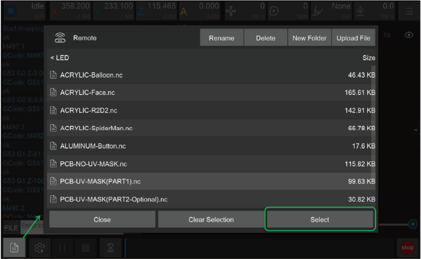
No UV solder mask
1. Select the “PCB-NO-UV-MASK.nc” files to automatically run the tasks of PCB isolation, area cleaning, drilling and cutting contours.
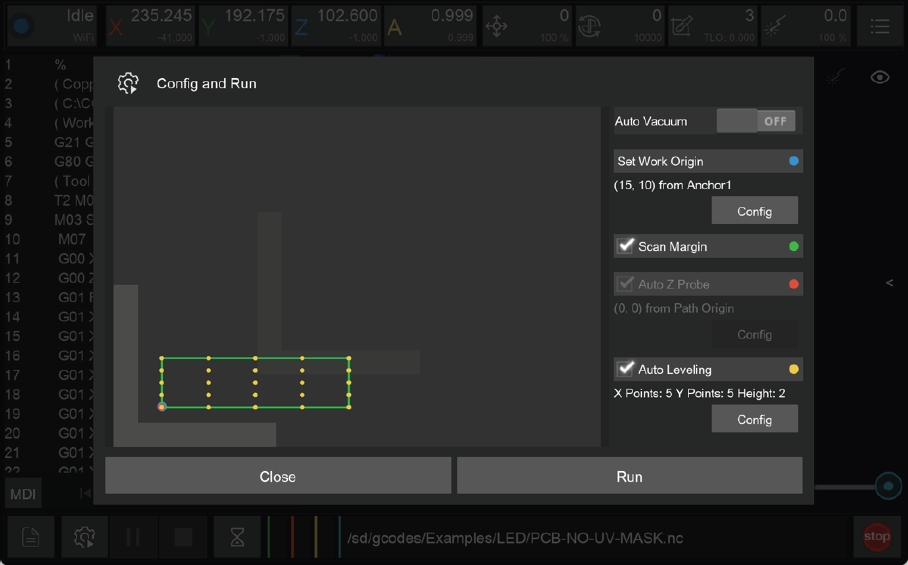
2. Open the task configuration and operation dialog box.
3. Set working coordinate to X offset 15, and Y offset 10 relative to anchor 1.
4. Check the “Scan Margin” option.
5. Check the “Auto Leveling” option, set the number of X detection points to 5, Y to 5, and the detection height to 2.
6. Check the configuration and click Run, change the tools according to the controller software's prompt.The tools that need to be replaced for this task are: the wired probe, Tool #2, and Tool #3.
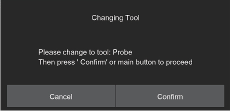
7. You can move the machine to the clearance position after the operation is completed to reduce the interference to subsequent operations.
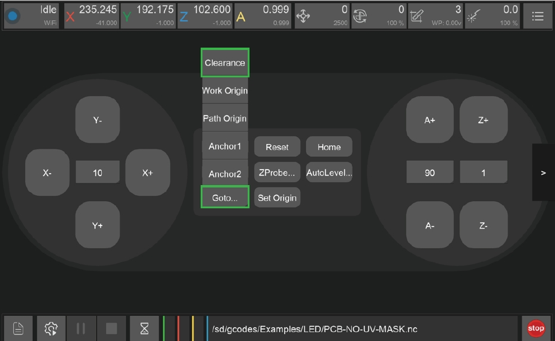
8. Take out the PCB board and cut off the tabs with the handsaw in the accessory kit.
Use UV solder mask（If you bought the PCB pack）
Machining step 1:
¶ PCB isolation and area cleaning
1. Select the “PCB-UV-MASK (PART1).nc” file.
2. Open the task configuration and operation dialog box.(The figure is the same as the first step of not using the UV solder mask)
3. Set working coordinate to X offset 15, and Y offset 10 relative to anchor 1.
4. Check the “Scan Margin” option.
5. Check the “Auto Leveling” option, set the number of X detection points to 5, Y to 5, and the detection height to 2.
6. Check the configuration according to the figure above and click Run, change the tools according to the controller software's prompt.（Please refer to Item 6 of “No UV solder mask”）
7. You can move the machine to the clearance position after the operation is completed to reduce the interference to subsequent operations.（Please refer to Item 7 of “No UV solder mask”）
¶ Machining step 2:
¶ Apply UV solder mask
1. Use the sanding block in the accessory kit to polish the PCB surface.
2. Use the roller to apply a thin layer of UV solder mask evenly.
3. Put the UV lamp above the PCB and wait for the UV layer solid.
4. Clean extra solder mask on the roller and other parts using alcohol wipes.
Note: Apply less UV solder mask first, increase later, its hard to clean up if apply too much. The curing time will varies with different UV solder mask and different UV lights. Please wait until the solder mask is completely solid.
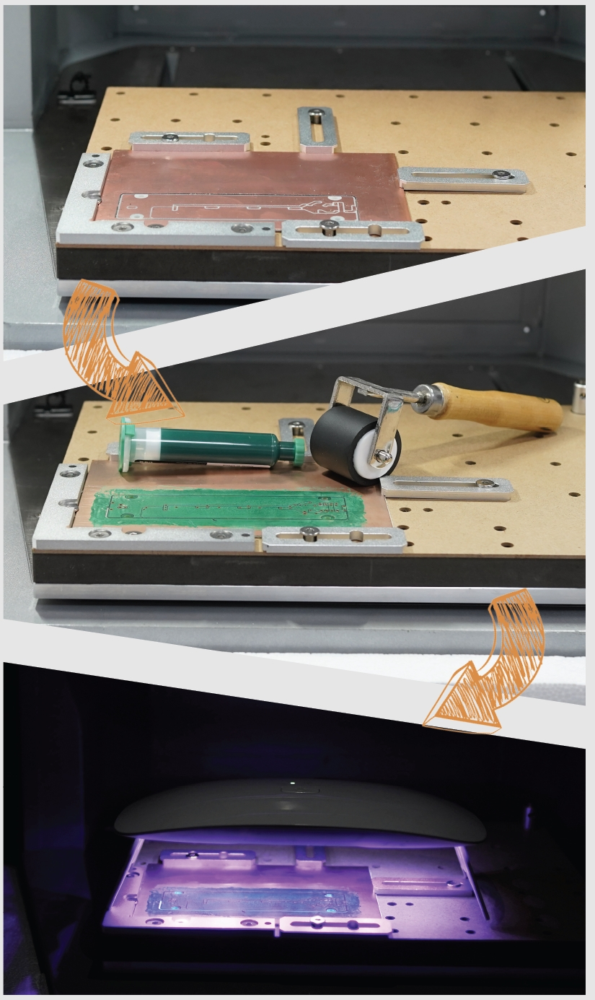
Machining step 3:
¶ Remove UV solder mask, drilling and cutting contours
1. Select the “PCB-UV-MASK (PART2).nc” file.
2. Open the task configuration and operation dialog box (the automatic detection has been completed in step 1, no need to redo here)
3. Uncheck“Scan Margin” option.
4. Uncheck “Auto Z Probe” option.
5. Uncheck “Auto Leveling” option.
6. Check the configuration according to the figure above and click Run, change the tools according to the controller software's prompt.（Please refer to Item 6 of “No UV solder mask”）
7. You can move the machine to the clearance position after the operation is completed to reduce the interference to subsequent operations.（Please refer to Item 6 of “No UV solder mask”）
8. Take out the PCB board and cut off the remaining tabs with the handsaw in the accessory kit. Flatten the edges using the sanding block.
Base
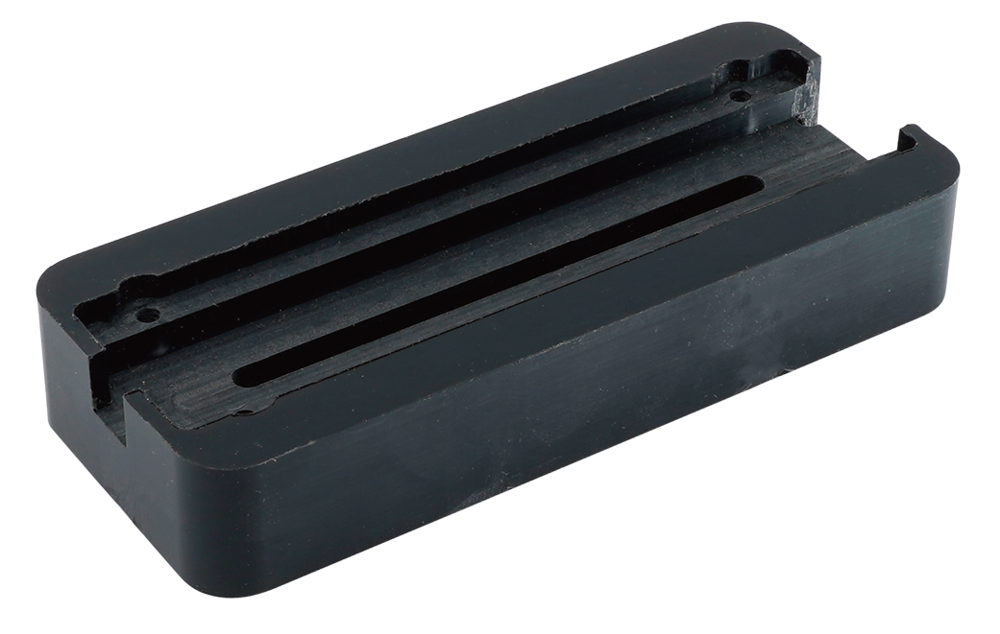
Material preparation
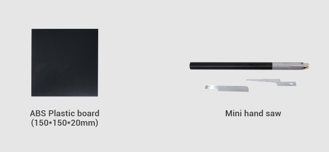
Machining process
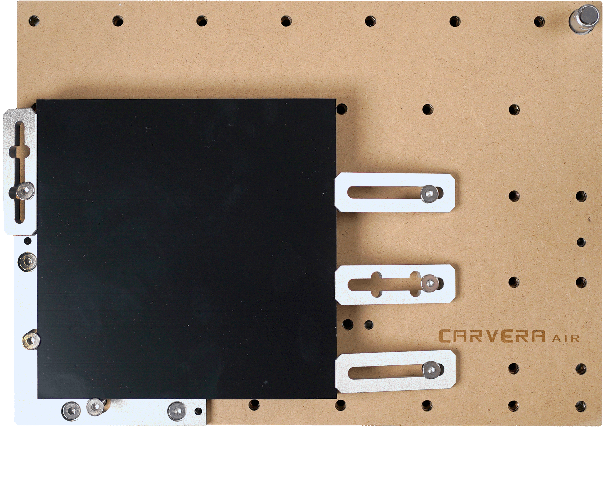
1. Fix the ABS plastic board and the wasteboard to the table as shown in the figure. Align it to the L-bracket at anchor point 1.
2. Make sure the used milling bits are ready. No.1-3.175*25mm single flute spiral bit, No.2-30°0.2mmV-bit.
3. Turn on the power and wait for the automatic homing to complete.
4. Open the control software and connect to Carvera Air (please read Carvera Air instruction manual for detailed steps)
5. Open Root->Examples->LED in the remote directory. Select“ABS-Base.nc” machining file.
6. Open the task configuration and operation dialog box
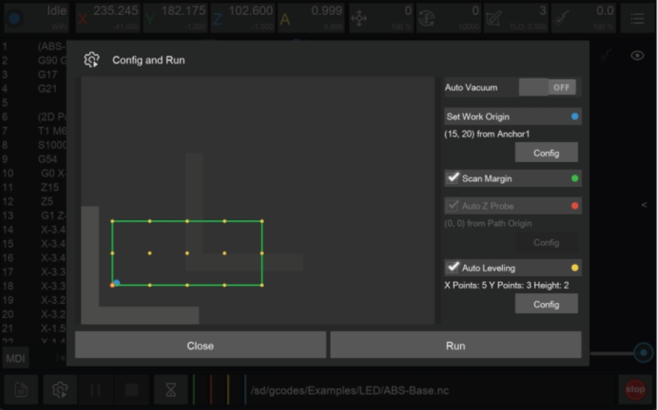
7. Set working coordinate to X offset 15, and Y offset 20 relative to anchor 1.
8. Check the “Scan Margin” option.
9. Check the “Auto Leveling” option, set the number of X detection points to 5, Y to 3, and the detection height to 2.
10. Check the configuration according to the figure above and click Run, change the tools according to the controller software's prompt.（Please refer to Item 6 of “No UV solder mask”）
11. You can move the machine to the clearance position after the operation is completed to reduce the interference to subsequent operations.（Please refer to Item 7 of “No UV solder mask”）
12. Use a vacuum to clean the table, take out the ABS board and use the handsaw in the accessory kit to carefully remove the tabs.
Display board
Material preparation
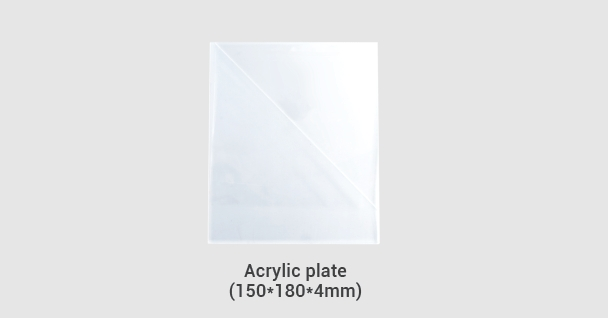
Machining process
1. Cut the 2mm MDF board with a size of 150*180mm as the wasteboard.
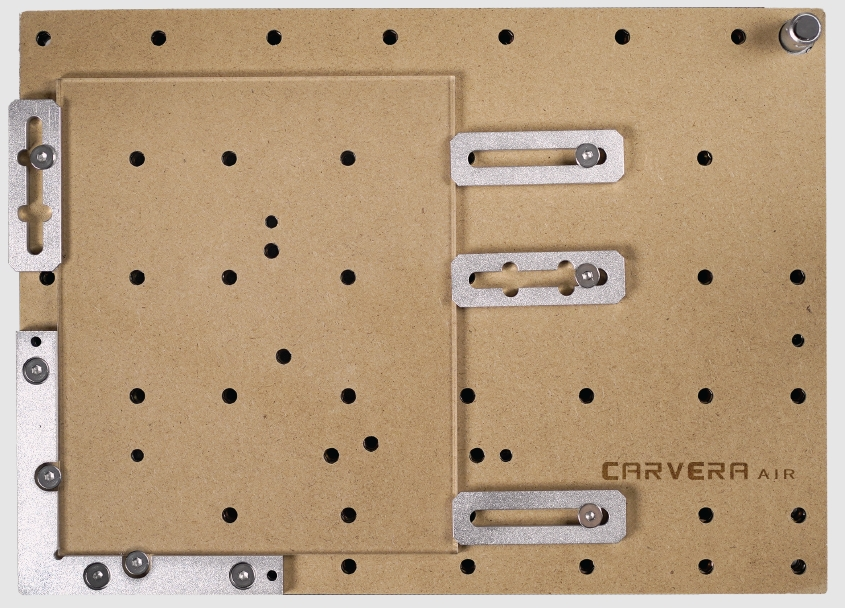
1、Remove the protective film on the top. Fix the acrylic board and the wasteboard to the table, as shown in the figure. Align it to the L-bracket at anchor point 1.
2. Make sure the used milling bits are ready. No.1-3.175*25mm single flute spiral bit, No.2-30°0.2mmV-bit.
3. Turn on the power and wait for the automatic homing to complete.
4. Open the control software and connect to Carvera Air (please read Carvera Air instruction manual for detailed steps)
5. Open Root->Examples->LED in the remote directory. Select the “ACRYLIC-XXXX.nc” file. Here we
provided 5 pictures for you. You can choose the one of your preference.
6. Open the task configuration and operation dialog box.
7. Set working coordinate to X offset 15, and Y offset 25 relative to anchor 1.
8. Check the “Scan Margin” option.
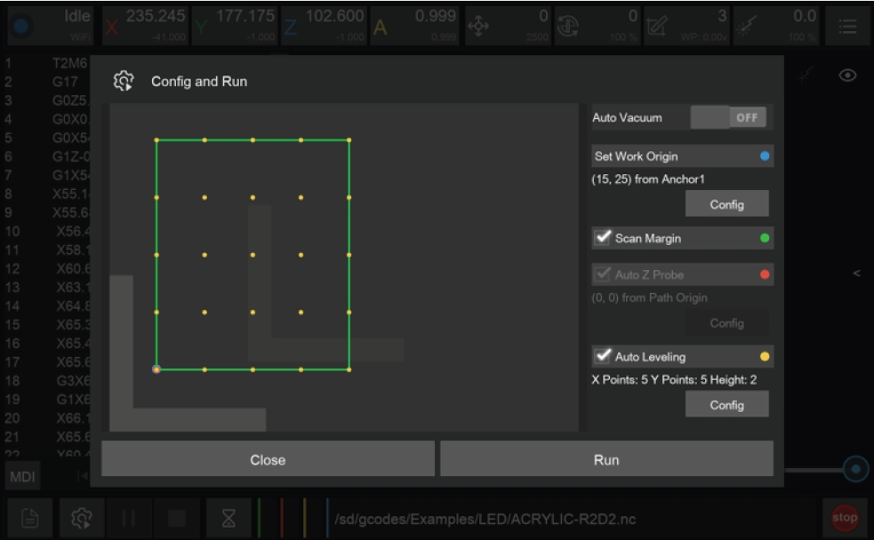
9. Check the “Auto Leveling” option, set the number of X detection points to 5, Y to 5, and the detection height to 2.
10. Check the configuration according to the figure above and click Run, change the tools according to the controller software's prompt.（Please refer to Item 6 of “No UV solder mask”）
11. You can move the machine to the clearance position after the operation is completed to reduce the interference to subsequent operations.（Please refer to Item 7 of “No UV solder mask”）
12. Use a vacuum to clean the worktop and remove the acrylic board.
13. Break the acrylic board by aligning the V-groove with an edge of a table.
Touch switch
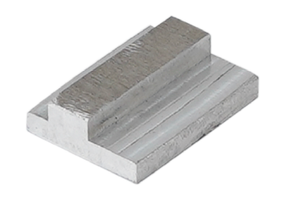
Material preparation
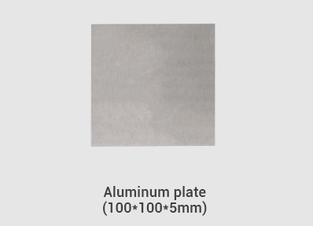
Machining process
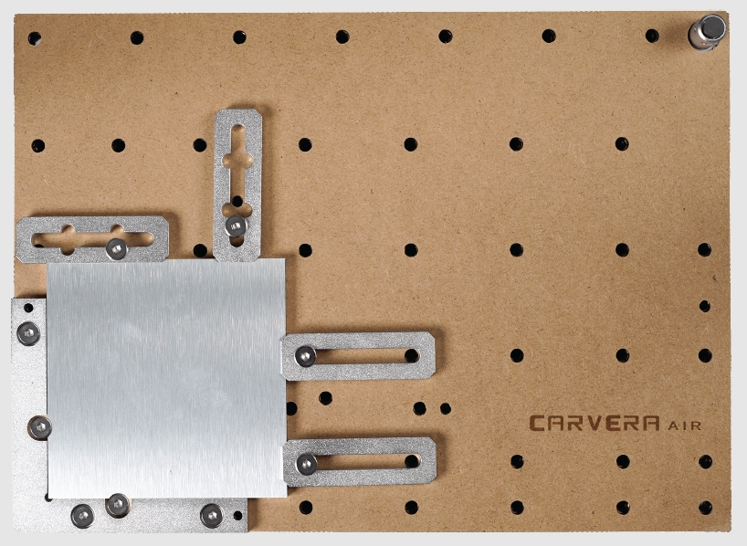
1. Fix the aluminium alloy board and the wasteboard to the table, as shown in the figure. Align it to the L-bracket at anchor point 1.
2. Make sure the used milling bits are ready. No.4-3.175*12 single flute spiral bit for metal.
3. Turn on the power and wait for the automatic homing to complete.
4. Open the control software and connect to Carvera Air (please read Carvera Air instruction manual for detailed steps)
5. Open Root->Examples->LED in the remote directory. Select the “ALUMINUM-Button.nc” file.
6. Open the task configuration and operation dialog box.
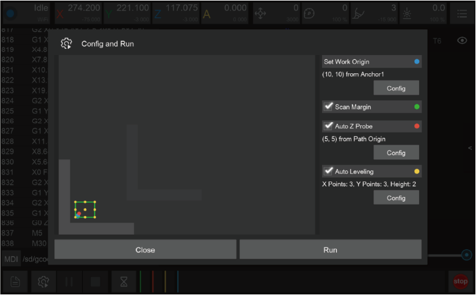
7. Set working coordinate to X offset 10, and Y offset 10relative to anchor 1.
8. Check the “Scan Margin” option.
9. Check the “Auto Leveling” option, set the number of X detection points to 3, Y to 3, and the detection height to 2.
10. Check the configuration according to the figure above and click Run, change the tools according to the controller software's prompt.（Please refer to Item 6 of “No UV solder mask”）
11. You can move the machine to the clearance position after the operation is completed to reduce the interference to subsequent operations.（Please refer to Item 7 of “No UV solder mask”）
12. Use a vacuum to clean the worktop, remove the board and use the handsaw in the accessory kit to carefully remove the tabs.
LED lamp assembly
Solder PCB（Optional）
We provide a soldered PCB for your direct use. If you want to make your own, please refer to our soldered PCB board for components choosing and placement.
Assembly
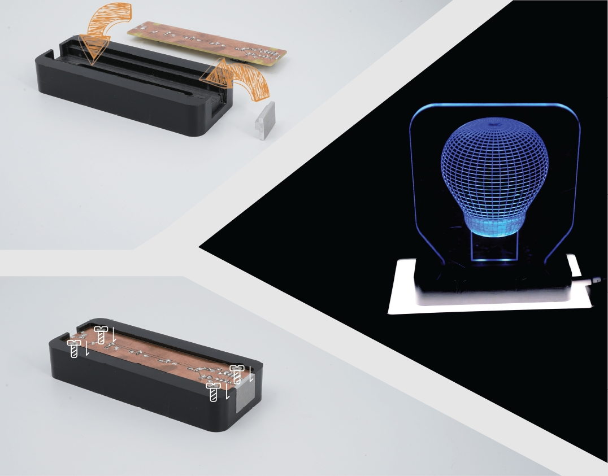
1. Glue the aluminium alloy touch button to the side of the base.
2. Fix the PCB board to the bottom of the base with 4 screws.
3. Insert the acrylic display board into base.
4. Plug Type-C USB cable and the assembly is finished.
5. You can adjust the brightness and turn on/off the light by touching the aluminum button.